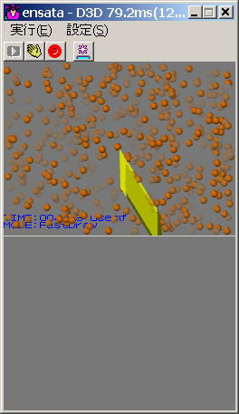

void NNS_G2dDrawSprite( s16 px, s16 py, int pz,
int sx, int sy,
int U0, int V0, int U1, int V1 );
void NNS_G2dDrawSpriteSimple ( const NNSG2dSimpleSprite* pS );
void NNS_G2dDrawSpriteBasic ( const NNSG2dBasicSprite* pB );
void NNS_G2dDrawSpriteExtended( const NNSG2dExtendedSprite* pE );
| 種類 | 指定できる機能 | 適用例 |
| Simple Sprite | スプライトの位置、Ｚ軸回りの回転、プライオリティ、アルファブレンド | パーティクル等、同一テクスチャで位置、サイズのみが異なるスプライトの描画 |
| Basic Sprite | Simple Spriteの全機能、テクスチャ指定、カラーモジュレーション | 標準的なスプライトの描画 |
| Extended Sprite | Basic Spriteの全機能、ＵＶ値の設定、回転中心の設定、上下左右のフリップ | UVアニメーション等のエフェクトを含むスプライトの描画 |
なし
2007/11/26 アルファ値に関する説明を追加
2004/12/06 初版